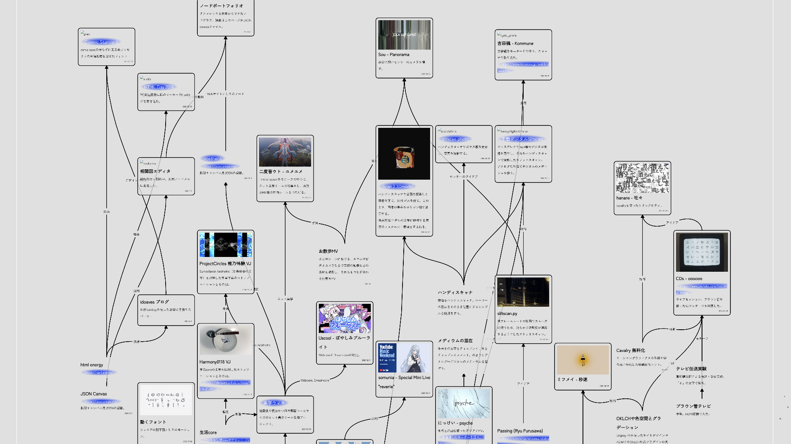

ノードポートフォリオ
hazuqu

リファレンスや影響、関連性に重きを置いたポートフォリオです。ノードをクリックすると、直接関連のあるノードを強調します。今回は私hazuquの自主制作を軸に置く場所として用意しました。
ノードポートフォリオ
面白そうな点
自身の作品のオリジナリティの喧伝ではなく、過剰に文脈の則りやリファレンスを主張することになります。
理想的な量のノードが集まったときに、技術/アイデアメモのノードに対して組み合わせを想起しやすいこと、必要のないアイデアや既にある作品を確認できることで、今後の制作の方針の助けになりそうです。
Obsidianによる無限キャンバス用の仕様JSON Canvasを利用しています。Obsidianを始めいくつか編集ソフトがあります。
人のポートフォリオに勝手に自作品を繋げられたら面白いです。（ちなみに同階層img内の映像/画像ファイルはすべて私個人のものです、そうでないならYoutube等を貼っています）
欠点
ポートフォリオとしての体裁とノードの繋がりの見やすさがトレードオフです。
横にメディウム、縦にタイムラインを考えていましたが、あまりに離れている時は近づけるしかないですね。またタイムコードから位置を作ろうとした場合にリファレンスと自作品の時代・発表ペースがかけ離れているので、今回は縦位置も手動で調整としています。
構成
- nodes.canvas: ノードデータの大本のJSONです。
- nodes.js: nodes.canvasからhtmlに変換するjsです。div class="nodeField"の中に組み立てます。
♥
⤴